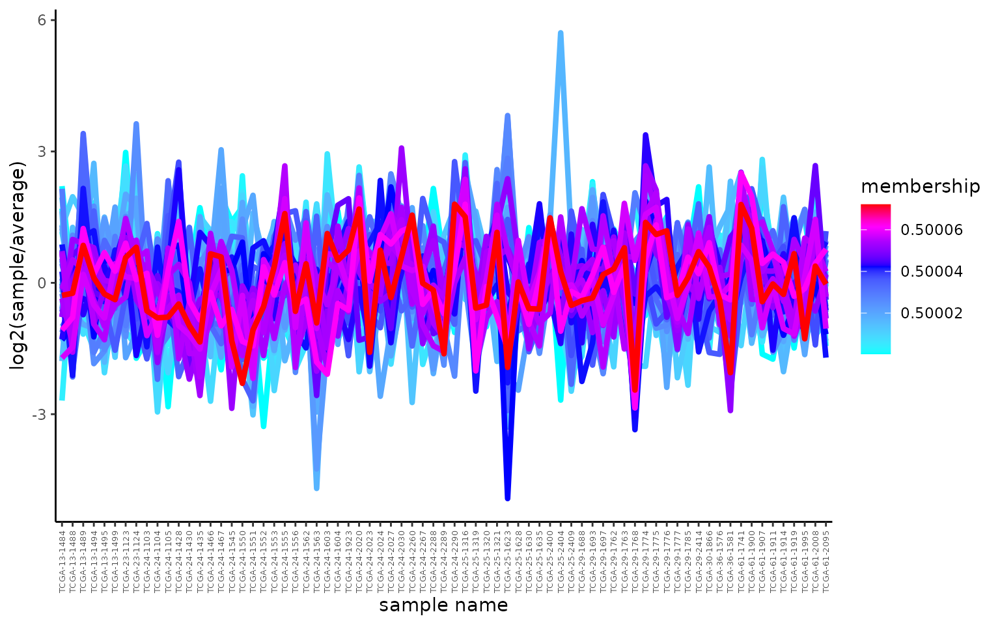
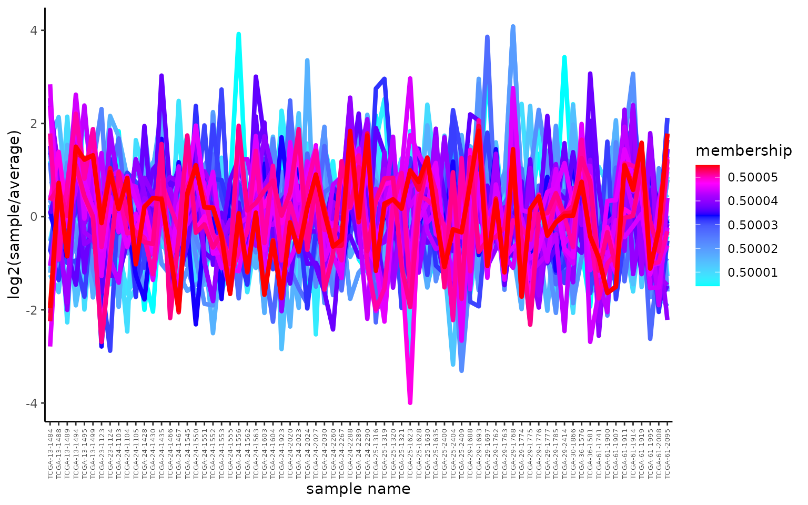

fuzzy_cmeans.Rmd
# Packages
library(MSnSet.utils)
library(knitr)
library(ggplot2)
library(e1071)
library(reshape2)
# set global chunk options
opts_chunk$set(size='tiny')Example of fuzzy c-means with visualization. This example is not as great as one can be, but it serves the purpose of showing the code.
data("cptac_oca") # oca.set
oca.set <- oca.set[complete.cases(exprs(oca.set)),]
# let's keep the most varying (otherwise, there is not strong clustering)
oca.set <- oca.set[order(apply(exprs(oca.set), 1, sd))[1:100],]
ym <- exprs(oca.set)
# scaling by st.dev.
ym <- sweep(ym, 1, apply(ym, 1, sd, na.rm = T), "/")
set.seed(0)
res <- cmeans(ym, centers = 2, iter.max = 1000, verbose = FALSE,
dist = "euclidean", method = "cmeans")
colSums(res$membership > 0.5)## 1 2
## 57 43
# subset data to one cluster
for (cluster_num in colnames(res$membership)) {
ym1 <- ym[names(which(res$membership[, cluster_num] > 0.5)),]
x <- melt(ym1, varnames = c("protein", "sample"),
value.name = "relative_abundance")
x <- merge(x, res$membership[, cluster_num, drop = F],
by.x = 'protein', by.y = 0)
colnames(x)[ncol(x)] <- "membership"
# order levels according to protein membership score
lvls <- names(sort(res$membership[res$membership[, cluster_num] > 0.5,
cluster_num]))
x$protein <- ordered(x$protein,
levels = lvls)
p <- ggplot(x, aes(x=sample, y=relative_abundance,
color=membership, group=protein)) +
stat_summary(aes(group = protein), fun.y = mean,
geom = "line", size = 1.5) +
scale_color_gradientn(colours = c("cyan","blue", "magenta", "red"),
values=c(0, 0.5, 0.75, 0.9, 1)) +
# ylim(-2.2,+2.2) +
theme_classic() +
ylab("log2(sample/average)") +
xlab("sample name") +
theme(axis.text.x = element_text(angle = 90, size = 5, vjust = 0.5))
plot(p)
}